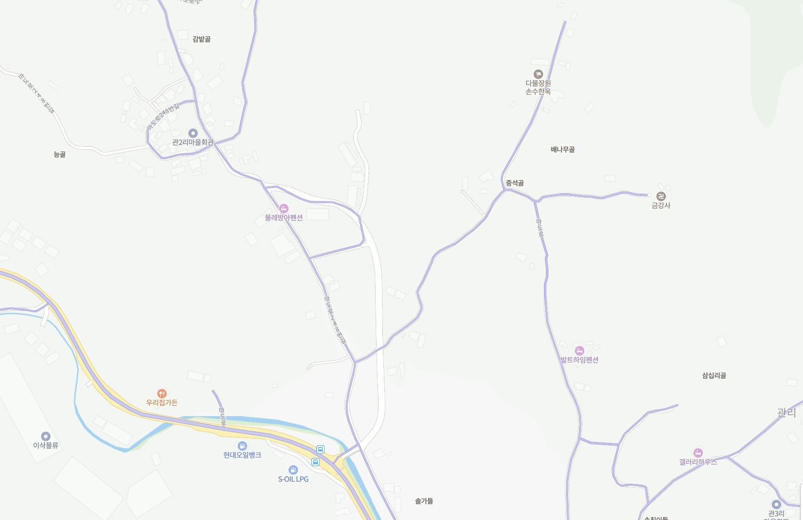

Location
찾아오시는 길
이천의 고요한 골목을 따라 천천히 걸어오시면, 한옥의 온기를 담은 차담한옥(차담옥)을 만나실 수 있습니다.

전용 단독 주차장 완비차담옥 오시는 길 안내
경기도 이천의 고즈넉한 골목 안쪽에 자리하여, 복잡한 일상을 벗어나 조용하고 프라이빗한 쉼을 경험하실 수 있습니다.
이천의 고요한 골목을 따라 천천히 걸어오시면, 한옥의 온기를 담은 차담한옥(차담옥)을 만나실 수 있습니다.

전용 단독 주차장 완비경기도 이천의 고즈넉한 골목 안쪽에 자리하여, 복잡한 일상을 벗어나 조용하고 프라이빗한 쉼을 경험하실 수 있습니다.